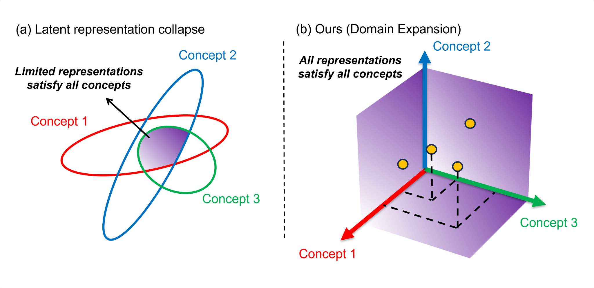
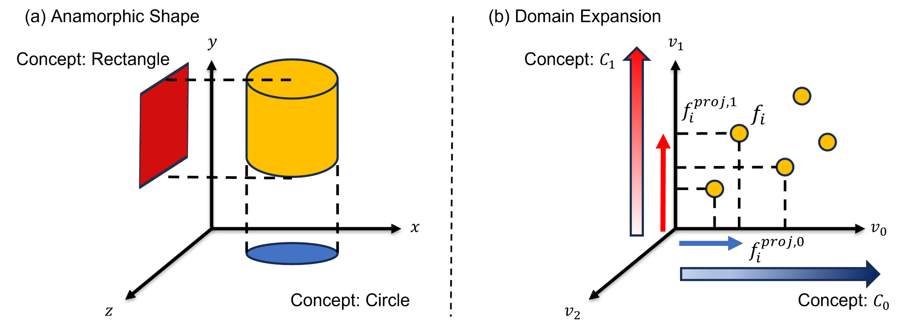
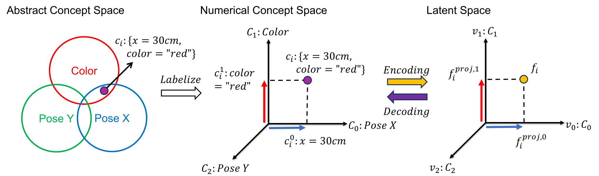
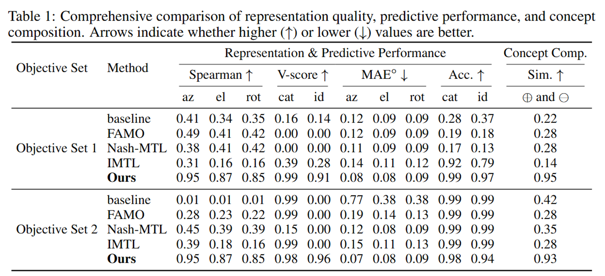

Domain Expansion: A Latent Space Construction Framework for Multi-Task Learning
Accepted to ICLR 2026
*Video plays automatically (muted).*
Training a single network with multiple objectives often leads to conflicting gradients that degrade shared representations, forcing them into a compromised state that is suboptimal for any single task—a problem we term latent representation collapse. We introduce Domain Expansion, a framework that prevents these conflicts by restructuring the latent space itself. Our framework uses a novel orthogonal pooling mechanism to construct a latent space where each objective is assigned to a mutually orthogonal subspace.
We validate our approach across diverse benchmarks—including ShapeNet, MPIIGaze, and Rotated MNIST—on challenging multi-objective problems combining classification with pose and gaze estimation. Our experiments demonstrate that this structure not only prevents collapse but also yields an explicit, interpretable, and compositional latent space where concepts can be directly manipulated.

(a) Latent representation collapse. In standard multi-task learning, competing objectives lead to latent representation collapse, where the solution spaces for different concepts (colored ellipses) overlap in only a small, compromised region.
(b) Domain Expansion. In contrast, our method assigns each concept to an orthogonal basis vector in the latent space, preventing interference and creating a structured, interpretable representation where features for each concept are clearly separated.

A single latent vector represents multiple concepts through orthogonal projections. (a) An anamorphic object, such as a cylinder, reveals different primitive concepts (a circle vs. a rectangle) when viewed from orthogonal directions.
(a) An anamorphic object, such as a cylinder, reveals different primitive concepts (a circle vs. a rectangle) when viewed from orthogonal directions.
(b) Analogously, our method treats a single latent feature as a rich object that encodes multiple concepts simultaneously. The specific value for each concept is determined by its projection onto a corresponding orthogonal axis in the latent space.

The orthogonal structure of our method is not merely a training aid; it endows the latent space with powerful properties, turning it into an interpretable and compositional concept algebra.
This compositional structure enables controlled edits, disentangled analysis, and more reliable multi-objective behavior.
Because each projection subspace \( \mathcal{F}^{\text{proj}}_m \) is orthogonal to the others, the target concepts they represent are disentangled in the latent space:
A single latent feature \( f_i \) simultaneously encodes a full instantiated concept \( c_i \). The feature can be decomposed into orthogonal projections, which are then decoded into their corresponding target instantiated concepts, as illustrated in the figure above:
Conversely, the full latent feature can be reconstructed from its components:
where the reconstruction is defined as:
This operator adjusts an instantiated concept \( c_i \) by applying a change defined by a single target instantiated concept \( c^m_\Delta \in \mathcal{C}_m \). The operation modifies the latent feature \( f_i \) without affecting any other target concepts. We first obtain the latent vector for the change:
The adjusted latent feature is then given by simple vector addition or subtraction:
The correspondence between the concept and latent spaces is:
The derivation for the subtraction operator \( \ominus^{m} \) is analogous.
This operator composes two full instantiated concepts, \( c_p \) and \( c_q \), by operating on their corresponding latent representations, \( f_p \) and \( f_q \). The composition is achieved through simple vector addition or subtraction:
This operation corresponds to a component-wise combination in each orthogonal subspace:
The derivation for the subtraction operator \( \ominus \) is analogous.

We evaluate Domain Expansion on ShapeNet, MPIIGaze, and Rotated MNIST across mixed objective settings (classification, pose, and gaze estimation). Results show reduced latent collapse and improved task performance compared with conventional shared-latent baselines.
@inproceedings{huang2026domain,
title={Domain Expansion: A Latent Space Construction Framework for Multi-Task Learning},
author={Huang, Chi-Yao and Vo, Khoa and Verma, Aayush Atul and Lu, Duo and Yang, Yezhou},
booktitle={International Conference on Learning Representations (ICLR)},
year={2026},
url={https://arxiv.org/abs/2601.20069}
}